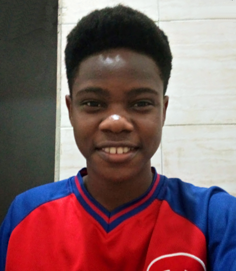

About Me
Hi I'm Joshua Samuel! And this year, I happen to be one of those called for NYSC! NYSC is a mandatory one-year service for every Nigerian who has completed her Tertiary education.
My journey began by reporting at the Iseyin orientation camp located in Oyo State - the state I was posted to for my service. After camp, I resumed at my PPA - place of work - and then assigned to the Sanitation CDS group.